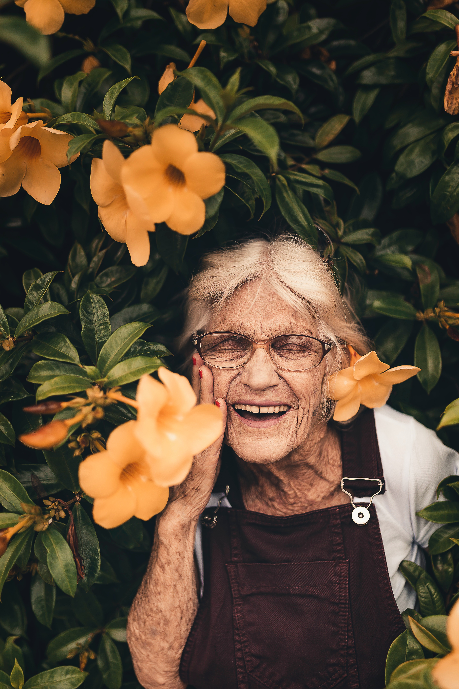
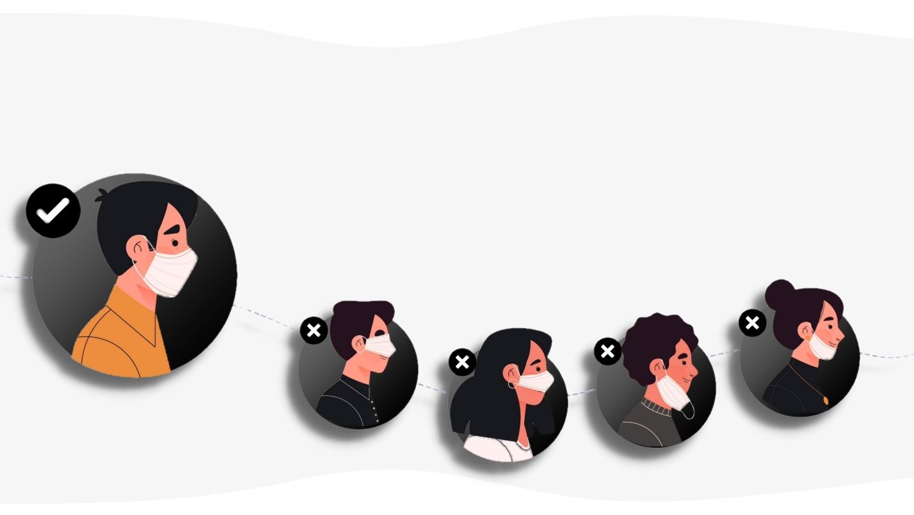

Parenting

Cum să ai grijă de familia ta
Copiii de toate vârstele se pot îmbolnăvi de COVID-19, dar
majoritatea copiilor infectați de obicei nu dezvoltă o formă la
fel de gravă precum adulții, unii fiind chiar asimptomatici. Cu
toate acestea, copiii pot fi purtători ai virusului.
- Dacă copilul dumneavoastră sau dumneavoastră ați fost în preajma cuiva care are COVID-19, cineva din departamentul de sănătate vă poate contacta pentru urmărirea contactelor. Vorbiți cu ei și urmați.
- Purtați conversații deschise cu copiii și încurajazați-l să pună întrebări. Trebuie să vă amintiți că ar putea avea o reacție diferită la stres, așa că aveți răbdare și înțelegere.
- Educați-vă copilul să acopere gura și nasul cu un șervețel, o batistă sau cot îndoit în timp ce tușește sau strănută.
- Nu permiteți copilului dumneavoastră să intre în contact strâns cu oricine are o răceală, febră sau simptome asemănătoare gripei.
- Nu duceți copiii în locuri aglomerate. Păstrați-i cât mai mult posibil în interior.
- Nu întârziați să căutați îngrijire medicală de urgență pentru copilul dvs.
Alimentație
Siguranța alimentelor
Deși studii recente arată că virusul SARS-CoV-2 (care provoacă
boala COVID-19) persistă până la 24 de ore pe carton și până la
câteva zile pe suprafețele mai dure (plastic, oțel), Organizația
Mondială a Sănătații menționează că „până în prezent nu există
niciun caz confirmat de Covid-19 transmis prin alimente sau
ambalaje alimentare”.
- Spală-te pe mâini înainte de a mânca.
- Spală ușor, cu apă rece de la robinet, toate fructele și legumele înainte de a le consuma.
- Gătiți alimentele la temperatura recomandată.
- Evita sa atingi produse multiple cand faci selectia a ceea ce vrei sa cumperi.
- Nu folosi dezinfectanți concepuți pentru suprafețe dure, precum clor sau amoniac, pe ambalaje sau alimente.
- Nu splăla fructele și legumele cu săpun. O simplă clătire cu apă este suficient.
Igienizare

Cum mă protejez?
Treburile gospodărești zilnice s-au transformat într-o sursă de
incertitudini și anxietăți pe măsură ce familiile se străduiesc
să ducă la bun sfârșit sarcinile de bază și să le asigure celor
dragi condițiile necesare de siguranță și sănătate.
Dezinformarea răspândită privind coronavirusul ne supune pe toți
riscurilor și contribuie la intensificarea stresului de a fi
nevoiți să filtrăm adevărul de ficțiune.
- Curăță și dezinfectează în mod regulat suprafețele menajere obișnuite - cum ar fi mesele, blaturile, clanțele ușii, întrerupătoarele, mânerul robinetelor, chiuvetele și toaleta.
- Spălați articolele, folosind cea mai caldă setare de apă corespunzatoare pentru acestea și uscați-le complet.
- Dacă este posibil, nu scutura rufele murdare. Acest lucru va reduce la minimum posibilitatea de a dispersa virusul în aer.
- Este important să nu ștergeți soluțiile de curățat imediat după ce le-ați aplicat pe o suprafață. Multe produse de dezinfectat, precum șervețelele și sprayurile trebuie să fie lăsate să acționeze pe o suprafață timp de câteva minute pentru a fi eficiente.
Perioada sarcinii

Înainte de primii pași
Chiar dacă nu se poate spune cu certitudine că femeile
însărcinate au un grad mai mare de risc de complicații odată
infectate cu coronavirusul SARS-CoV-2, știm că orice viroză sau
infecție respiratorie le-ar putea afecta, date fiind schimbările
pe care organismul lor le parcurge. Pe de altă parte experiența
infecțiilor respiratorii ca Influenza sau SARS-CoV au arătat că
pacientele gravide au un risc crescut pentru o morbiditate
severă și mortalitate. Date ca nașterea prematură, posibil
asociată COVID-19, lipsa pasajului transplacentar al virusului,
lipsa infecției neonatale, se bazează doar pe un număr redus de
cazuri publicate.
- Este absolut necesar să păstrezi permanent legatura cu medicul curant.
- Amâna pe cât posibil evaluarile inutile, discutând permanent sițuatia cu medicul curant, pentru a stabili care sunt consultațiile esențiale.
- Nu lua medicamente fără a discuta cu medicul în prealabil. Acestea pot produce malformații fetale.
- Nu lua soțul/partenerul de viață cu tine la clinică. Acesta nu mai are acces în clinică la naștere pe perioada pandemiei.
Vârstnici

Covid-19 și vârstnicii
Bătrânii sunt deosebit de periclitați în contextul
coronavirusului. În China, doar 0,2 la sută dintre persoanele
infectate de sub 40 de ani și-au pierdut viața în urma bolii
pulmonare cauzate de coronavirus, comparativ cu 8 la sută dintre
cei cu vârste între 70 și 79 de ani și 14,8 la sută dintre
persoanele de peste 80 de ani.
- Discutați cu un furnizor de asistență medicală, asigurător și farmacist despre obținerea unei aprovizionări suplimentare (adică mai mult de 30 de zile) de medicamente eliberate pe bază de rețetă, dacă este posibil, pentru a vă reduce călătoriile la farmacie.
- Sunați la furnizorul dvs. de asistență medicală dacă aveți îngrijorări cu privire la afecțiunile dvs. medicale subiacente sau dacă vă îmbolnăviți și credeți că este posibil să aveți COVID-19. Dacă aveți nevoie de ajutor de urgență, sunați imediat la 112.
- Evitați alți oameni care nu poartă mască de protecție.
- Evitați să vă atingeți ochii, nasul și gura înainte de a vă spăla mâinile cu apă și săpun.
Animale

Animalele de companie în pandemie
Virusul COVID-19 încă reprezintă un virus nou, aflat în
cercetare, dar știm că se poate răspândi de la oameni la animale
în anumite situații. Tratează-ți animalele de companie asemenea
altor membri ai familiei pentru a le proteja de o posibilă
infecție COVID-19.
- Plimbă animalele cu lesă, la cel puțin 6 metri distanță de alții pentru a le proteja de interacțiunea cu oamenii din afara gospodăriei.
- Păstrează pisicile în interior când este posibil și nu le lăsa să circule liber afară.
- Evită locurile publice în care se adună un număr mare de oameni.
- Nu pune o mască animalelor de companie. Măștile ar putea dăuna animalului tău de companie.
- Nu administra animalului de companie niciun vaccin fără a te consulta cu medicul veterinar.
- Nu îți abandona animalul/animalele de companie.
Învață să porți corect masca de protecție
Masca medicală este o metodă extrem de eficientă pentru a preveni
îmbolnăvirea cu gripă, contactarea unei răceli sau viroze respiratorii.
Masca poate fi purtată atât de persoanele bolnave pentru a preveni
răspândirea virusului, cât și de persoanele sănătoase pentru a se
proteja de o eventuală îmbolnăvire.
